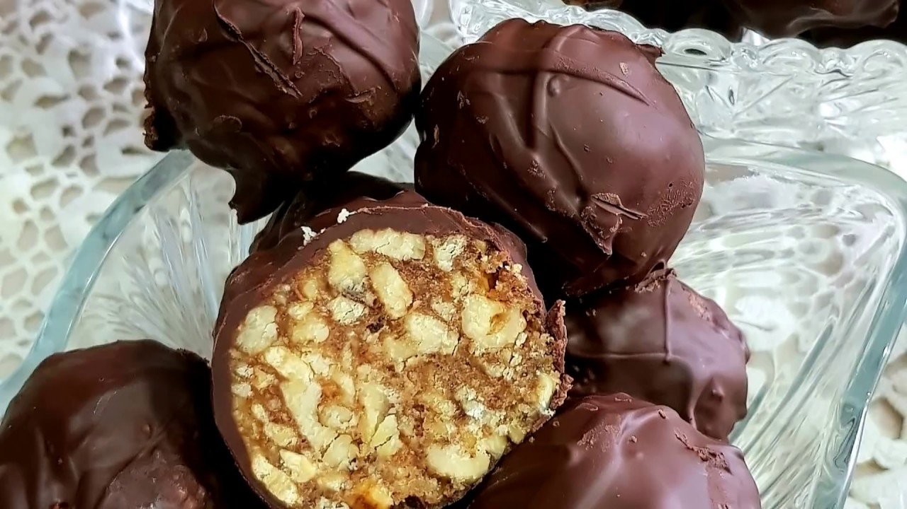
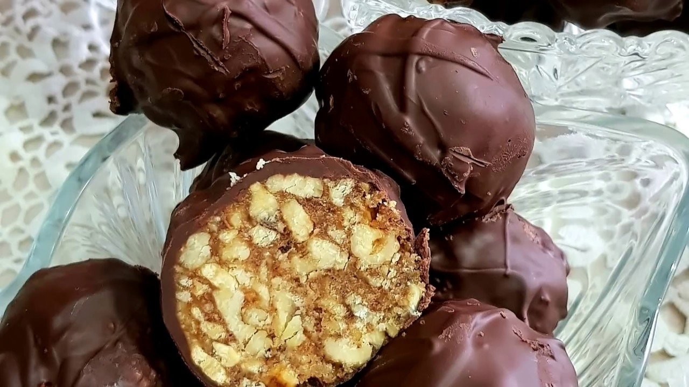

Perdele bucătărie | FAVI.ro
2021.03.24 11:28
1 Autentifică-te Mobilă Decorațiuni Textile Iluminat Reconstrucție Bucătărie și sufragerie Echipamente baie Living Dormitor Camera copiilor Hol și coridor Birou Grădină Promoții Toate categoriile Mobilă Canapele Canapele sofa Canapele, fotolii, scaune Paturi Dulapuri și comode Linii de bucătărie Mese și măsuțe Scaune Seturi de mobilă Spații de depozitare Mobilă de birou Mobilă de grădină Mobilă de hol Cuiere și suporturi Mobilă pentru copii Mobilă baie Mobilă de balcon Decorațiuni Ceasuri Tapete Autocolante de perete Tablouri Decorațiuni suspendate Ghivece de flori Jardiniere Vaze Flori decorative Stropitori Rame foto Semne Postere Sfeșnice și lumânări Decorațiuni copii Oglinzi Animale de companie Mici decorațiuni Boluri decorative Textile Lenjerii de pat Textile pentru dormitor Perne decorative Perdele Draperii Textile pentru copii Textile pentru bucătărie Textile baie Covoare Metraje Huse Jaluzele Galerii perdele Perne mobilă de exterior Textile pentru afară Iluminat Lustre Corpuri de iluminat și lustre Plafoniere Spoturi încorporate Aplice Lampadare Veioze Iluminat decorativ Becuri decorative Abajururi Iluminat pentru copii Iluminat exterior Ventilatoare tavan Iluminat baie Iluminat LED Reconstrucție Reconstrucție bucătărie Reconstrucție baie Faianță Pietre de fațadă Panouri de perete Cărămizi de sticlă Pardoseli Robinete de apă Uși și tocuri de ușă Cutii poștale Șemineuri și sobe Șemineuri bio Comutatoare și prize Căsuțe de grădină Garduri Saune și accesorii Calorifere design Bucătărie și sufragerie Mobilă de bucătărie Servirea mesei Organizare bucătărie Depozitare alimente Accesorii pentru gătit Accesorii pentru bucătărie Accesorii coacere Textile pentru bucătărie Aparatură de bucătărie Reconstrucție bucătărie Linii de bucătărie Faianță pentru bucătărie Blaturi de bucătărie Chiuvete de bucătărie Baterii de bucătărie Echipamente baie Mobilă baie Căzi Dușuri și cădițe Chiuvete baie Baterii baie Accesorii baie Oglinzi baie Textile baie Accesorii WC Paravane cadă Accesorii cadă Toalete și bideuri Reconstrucție baie Faianță baie Calorifere portprosop Măști cadă Iluminat baie Living Canapele Canapele sofa Fotolii Măsuțe de cafea Mese și comode tv Măsuțe Mobilă livinguri și sufragerii Dulapuri camera de zi Comode Biblioteci Vitrine Rafturi de perete Rafturi Suporturi reviste și ziare Taburete Divane Pufuri Șemineuri bio Cufere și lăzi Iluminat camera de zi Dormitor Paturi Depozitare sub pat Somiere Noptiere Comode Dulapuri de haine și dressinguri Dulapuri cu sertare depozitare Măsuțe de toaletă Seturi de dormitor Textile pentru dormitor Oglinzi Paravane Valeți Stative și cuiere pentru haine Tăvi mic-dejun Cutii și suporturi bijuterii Saltele și accesorii Cutii și coșuri pentru depozitare Iluminat dormitor Camera copiilor Decorațiuni copii Seturi cameră copii Paturi pentru copii Noptiere pentru copii Birouri pentru copii Măsuțe și seturi pentru copii Scaune pentru copii Șifoniere copii Comode copii Comode și dulapuri pentru copii de înfășat Dulapuri pentru camera copiilor Biblioteci și rafturi pentru copii Rafturi pentru copii Textile pentru copii Iluminat pentru copii Fotolii puf pentru copii Cuiere pentru copii Corturi și căsuțe Siguranță copii Mese de înfășat Spații pentru depozitare jucării Hol și coridor Mobilă pereți hol Dulapuri de pantofi Băncuțe pentru hol Cuiere Cârlige Suporturi pentru chei Covorașe intrare Opritoare pentru ușă Suporturi umbrelă Oglinzi Dulapuri pentru hol Mese consolă Birou Mese de birou Scaune de birou Dulapuri de birou Comode birou Seturi de birou Accesorii de birou Aviziere și panouri Veioze Grădină Seturi de grădină Mese de grădină Scaune de grădină Bănci terasă și grădină Canapele de grădină Șezlonguri Leagăne de grădină Dulapuri de depozitare pentru grădină Pergole, căsuțe și pavilioane de grădină Umbrare Piscine și piscine cu hidromasaj Dușuri de grădină Trambuline Grătar Picnic Decorațiuni grădină Hrănitoare pentru păsări Iluminat exterior Ghivece de flori Textile pentru afară Mobilă grădină copii Balcoane și terase Promoții
Perdele bucătărie
FAVI.ro Textile de uz casnic Perdele Sortează Filtrează Recomandăm Preferate de către clienți Cele mai noi Cele mai ieftine Cele mai scumpe Elimină toate bucătărie În stoc Reduceri 3 În stocPerdea Velaria de bucatarie
270,00 lei Detaliu Spre magazin 1Perdele Velaria ivoire cu fluturi maro
85,00 lei Detaliu Spre magazin În stocPerdea Velaria geometric bej, 400x180 cm
249,00 lei Detaliu Spre magazin 4 În stocPerdea Velaria in alb cu fluturi pruna, 165x150 cm
105,00 lei Detaliu Spre magazin 1Perdea Velaria Narcisa
185,00 lei Detaliu Spre magazin 2 În stocPerdea de bucatarie in cu fructe si cesti, 400x140 cm
369,00 lei Detaliu Spre magazin În stocPerdea Velaria in cos cu mere
270,00 lei Detaliu Spre magazin În stocPerdea Velaria Floarea soarelui crem
79,00 lei Detaliu Spre magazin În stocPerdea Velaria voal alb cu fluturi
117,00 lei Detaliu Spre magazin În stocPerdea Velaria tiul cu bordura maro, 400x140 cm
189,00 lei Detaliu Spre magazin 1 În stocPerdea Velaria in alb cu maci rosii
180,00 lei Detaliu Spre magazin 1 În stocPerdea Velaria sable unt cu flori
20,00 lei Detaliu Spre magazin 2 În stocPerdea Velaria in cos cu cirese
270,00 lei Detaliu Spre magazin 2 În stocPerdea Velaria cafe mocha, 320x200 cm
149,00 lei Detaliu Spre magazin 2 În stocPerdea de bucatarie, 400 x 170 cm
285,00 lei Detaliu Spre magazin În stocPerdea Velaria de bucatarie in cu bata maro si bordura florala, 325x155 cm
240,00 lei Detaliu Spre magazin 1 În stocPerdea Velaria in bej cu imprimeu baroc, 220x145 cm
140,00 lei Detaliu Spre magazin 3 În stocPerdea Velaria flori de camp
138,00 lei Detaliu Spre magazin 1 În stocPerdea Velaria toronto bolta, 300x170 cm
295,00 lei Detaliu Spre magazin 2 În stocPerdea Velaria de bucatarie cu mere, 350x160 cm
400,00 lei Detaliu Spre magazin 4 În stocPerdea Velaria sable decupat cu fructe, 300x150 cm
295,00 lei Detaliu Spre magazin În stocPerdea Velaria voal alb cu sirag wenge
135,00 lei Detaliu Spre magazin 2 În stocPerdea Velaria ivoire cu turcoaz, 270x155 cm
180,00 lei Detaliu Spre magazin 1 În stocPerdea Velaria baroc bej, 225x245 cm
135,00 lei Detaliu Spre magazin 1 În stocPerdea Velaria crem cu patratele, 310x155 cm
199,00 lei Detaliu Spre magazin În stocPerdea Velaria ploita alba cu dantela, 300x150 cm
140,00 lei Detaliu Spre magazin 1 În stocPerdea Velaria in gros texturat cu flori, 350x150 cm
220,00 lei Detaliu Spre magazin 1 În stocPerdea Velaria in unt lucios cu model baroc, 440x175 cm
270,00 lei Detaliu Spre magazin 2 -24% În stocPerdea de bucatarie Martha
175,00 lei 230,00lei Detaliu Spre magazin 1 În stocPerdea Velaria crin mare bej, 100x245 cm
42,00 lei Detaliu Spre magazin În stocPerdea Velaria in lacrima wenge, 60x125 cm
30,00 lei Detaliu Spre magazin În stocPerdea Velaria floare mica unt, 530x245 cm
230,00 lei Detaliu Spre magazin 1 În stocPerdea Velaria de bucatarie, in cu imprimeu lavanda
99,00 lei Detaliu Spre magazin 1Perdea Velaria linii maro, 260x245 cm
115,00 lei Detaliu Spre magazin În stocPerdea Velaria margarete, 180x280 cm
99,00 lei Detaliu Spre magazin 1 În stocPerdea Velaria in cristal alb cu flori verzi, 315x175 cm
200,00 lei Detaliu Spre magazin În stocPerdea Velaria Betice alb, 185x160 cm
150,00 lei Detaliu Spre magazin 1 În stocPerdea Velaria scurta cu imprimeu lavanda
180,00 lei Detaliu Spre magazin În stocPerdea Velaria flori de camp, 450x165 cm
276,00 lei Detaliu Spre magazin 1 În stocPerdea Velaria in crem cu imprimeu auriu, 190x145 cm
130,00 lei Detaliu Spre magazin În stocPerdea Velaria Lavanda
315,00 lei Detaliu Spre magazin 2 În stocPerdea Velaria voal crem cu broderie florala si bordura crem, 440x140 cm
270,00 lei Detaliu Spre magazin 3 În stocPerdea Velaria in ivory cu fluturi mov, 215x175 cm
135,00 lei Detaliu Spre magazin În stocPerdea Velaria in ivoire cu dungi orizontale, 255x155 cm
159,00 lei Detaliu Spre magazin În stocPerdea Velaria sable alb cu dantela, 340x140 cm
165,00 lei Detaliu Spre magazin 1 În stocPerdea Velaria voal alb cu dantela
85,00 lei Detaliu Spre magazin În stocPerdea Velaria tiul cu bordura maro, 435x140 cm
199,00 lei Detaliu Spre magazin În stocPerdea Velaria pirilty, 320x155 cm
199,00 lei Detaliu Spre magazin 1 În stocPerdea de bucatarie cu imprimeu floral
260,00 lei Detaliu Spre magazin 1 În stocPerdea Velaria voal cu flori albastre, 400x180 cm
187,00 lei Detaliu Spre magazin În stocPerdea Velaria de bucatarie cu cesti, 130x200 cm
70,00 lei Detaliu Spre magazin 3 În stocPerdea Velaria baroc mov pictat, 560x135 cm
199,00 lei Detaliu Spre magazin 1 În stocPerdea de bucatarie in cu fructe
255,00 lei Detaliu Spre magazin 2 În stocPerdea de bucatarie in cu fructe grena
390,00 lei Detaliu Spre magazin În stocPerdea Velaria Floarea soarelui alb
115,00 lei Detaliu Spre magazin 1 În stocPerdea Velaria Bianca 160x140 cm
105,00 lei Detaliu Spre magazin În stocPerdea Velaria de bucatarie cu cesti roz, 270x170 cm
270,00 lei Detaliu Spre magazin În stocPerdea Velaria in bodrum
167,00 lei Detaliu Spre magazin 2 În stocPerdea Velaria de bucatarie
225,00 lei Detaliu Spre magazin 1 În stocSet perdele Velaria pentru bucatarie, 110x115 cm
70,00 lei Detaliu Spre magazin 2 În stocPerdea Velaria de bucatarie voal unt cu flori turcoaz, 400 x 150 cm
280,00 lei Detaliu Spre magazin În stocSet perdele Velaria pentru bucatarie, 110x115 cm
70,00 lei Detaliu Spre magazin În stocPerdea Velaria cerc unt, 210x245 cm
95,00 lei Detaliu Spre magazin 1 În stocPerdea Velaria crem cu fluturi crem, 290x245 cm
130,00 lei Detaliu Spre magazin În stocPerdea Velaria de bucatarie voal crem cu patratele maro, 560x250 cm
340,00 lei Detaliu Spre magazin În stocPerdea Velaria in gros texturat cu flori, 250x170 cm
285,00 lei Detaliu Spre magazin 1 În stocPerdea Velaria crep alb cu flori, 190x165 cm
105,00 lei Detaliu Spre magazin 1Perdea Velaria Patricia
215,00 lei Detaliu Spre magazin În stocPerdea Velaria sable natura unt, 240x245 cm
105,00 lei Detaliu Spre magazin 1 În stocPerdea Velaria liliac roz, 150x165 cm
172,00 lei Detaliu Spre magazin În stocPerdea Velaria Clara, 335x185 cm
190,00 lei Detaliu Spre magazin 1 În stocPerdea Velaria baroc mov pictat, 490x150 cm
285,00 lei Detaliu Spre magazin 1 În stocPerdea Velaria de bucatarie, 390x155 cm
279,00 lei Detaliu Spre magazin În stocPerdea Velaria de bucatarie in cu bata florala si bordura roz, 310x155 cm
230,00 lei Detaliu Spre magazin În stocPerdea Velaria Lavanda 300x170 cm
255,00 lei Detaliu Spre magazin 1 În stocPerdea Velaria ploita alba cu bata florala, 390x175 cm
280,00 lei Detaliu Spre magazin În stocPerdea Velaria in ivoire cu flori roz gri, 145x150 cm
95,00 lei Detaliu Spre magazin În stocPerdea Velaria in princess 500x175 cm
306,00 lei Detaliu Spre magazin În stocPerdea Velaria in alb cu imprimeu abstract, 375x185 cm
230,00 lei Detaliu Spre magazin În stocPerdea Velaria in alb cu model abstract, 120x150 cm
89,00 lei Detaliu Spre magazin În stocPerdea Velaria flori rosii, 290x175 cm
180,00 lei Detaliu Spre magazin În stocPerdea Velaria sable flori maro, 550x60 cm
90,00 lei Detaliu Spre magazin În stocPerdea Velaria de bucatarie alba cu cesti
155,00 lei Detaliu Spre magazin În stocPerdea Velaria geografic, 290x75 cm
60,00 lei Detaliu Spre magazin Încarcă mai multe produse 1 2 Următoarea Ultima Mobilă Decorațiuni Textile Iluminat Reconstrucție Bucătărie și sufragerie Echipamente baie Living Dormitor Camera copiilor Hol și coridor PromoțiiContactează-ne
locuintefrumoase@favi.ro
Urmărește-ne
Info
Magazinele de pe FAVI Pentru magazine Termeni și condiții de utilizare Contact © Favi online s.r.o. FAVI în alte țări: FAVI.cz , FAVI.sk , FAVI.pl , FAVI.hu , FAVI.hr
- Perdele scurte Bucatarie - eMAG.ro
- Convertor unitati masura Bucatarie | Untdelemn de la Bunica
- Cu Medi in bucatarie
- Perdele | FAVI.ro
- Poze : pâine, bagheta, cină, alimente, carbohidrați, unt ...
- Cum se face GHEE | Bucatarie Indiana Vegetariana
- Crumble cu mere - retete de prajituri - Retete Practice
- Malay Roti – Lipii fine si moi cu Unt | Bucatarie Indiana ...
- Reţetă Fursecuri fragede cu unt - Arome în bucătărie
- Perdele bucătărie | FAVI.ro
- Perdele scurte Bucatarie - eMAG.ro
150 g unt la temperatura camerei. 100 g zahar pudra. 6 oua . 150 g ciocolata amaruie. 1 lingura cacao. 2 pliculețe zahar vanilat. 75 g zahar tos. 150 g faina. o priza sare. Mai avem nevoie. unt pentru uns tava
- Convertor unitati masura Bucatarie | Untdelemn de la Bunica
100 gr unt moale, la temperatura camerei 3-4 linguri lapte rece 1 lingurita sare aprox 150 ml apa. 1 cana = 350 ml. METODA Faceti un aluat fin si moale din fainuri + sare + lapte + 2 linguri unt moale (nu topit !) + apa. Turnati apa cate putin, nu toata deodata. Cantitatea de apa folosita depinde mult de tipul de faina pe care il aveti.
- Cu Medi in bucatarie
o lingură de unt; sare, piper; Mod de preparare dorada la cuptor cu sparanghel tras în unt. Peştele se curăţă de măruntaie (asta dacă nu aveţi noroc să luaţi peşte eviscerat) şi solzi, se spală şi se şterge uşor cu un prosop de hârtie. Se crestează peştii pe ambele părţi (4-5 tăieturi sunt suficiente).
- Perdele | FAVI.ro
Sare O linguriţă rasă = 10 g Făină O cană rasă = 250 g de făină Un pahar plin = 125 g O lingură = 15 g O lingură cu vârf = 25 g O. Citește mai multe.
- Poze : pâine, bagheta, cină, alimente, carbohidrați, unt ...
Perdea Velaria in unt lucios cu model baroc, 440x175 cm. 270,00 lei. Detaliu Spre magazin. 2. În stoc. Perdea Velaria ivoire cu turcoaz, 270x155 cm. 180,00 lei. ... Bucătărie și sufragerie Echipamente baie Living Dormitor Camera copiilor Hol și coridor Promoții Contactează-ne. locuintefrumoase@favi.ro ...
- Cum se face GHEE | Bucatarie Indiana Vegetariana
Știu că-ți place să gătești și să pui pe masă bucate făcute cu dragoste. Vrei ca totul să iasă ca la carte, iar eu vin în ajutorul tău cu un Convertor pentru unitățile de măsură în bucătărie. Acum poți calcula rapid câți mililitri are o linguriță de ulei sau câte grame sunt într-o cană de făină.
- Crumble cu mere - retete de prajituri - Retete Practice
Unt de arahide crocant "Rich Roast" 100%, fara aditivi, zahar, conservanti, 280g Meridian în stoc. Livrat de EcoNatural 21 26 Lei. 20 17 Lei. Adauga in Cos. 0 review-uri (0) Compara. Unt de caju, Obio, bio, fara gluten, fara sare, 250g ultimele 3 produse. 70 00 Lei (-31%) 48 00 Lei ...
- Malay Roti – Lipii fine si moi cu Unt | Bucatarie Indiana ...
Re: Cum facem unt de casa. da Laura, ar trebui sa iasa caci are grasime destula, dar iti va iesi un unt care va fi mai potrivit pentru mancaruri sarate decat la deserturi. din smantana dulce iese untul "dulce" cum ar veni, iar din creme fraiche (care e similara cu smantana acra) iese un unt "fermentat".
- Reţetă Fursecuri fragede cu unt - Arome în bucătărie
Această prăjitură cu brânză la tavă este făcută după rețeta bunicii mele. Noi îi spuneam „túrós pite”, (în limba maghiară) pite fiind o prăjitură simplă, la tavă, din ingrediente foarte simple: un aluat fraged cu unt sau untură și umplutură de brânză, fructe sau gem. În Ardeal prăjiturile cu aluat fraged sunt cunoscute ca „poronio” (poronyo sau porono). În ...
- Perdele bucătărie | FAVI.ro
Explorează selecția noastră de veselă, pahare, tacâmuri, accesorii de bucătărie și nu numai pentru a completa decorul meselor tale. Gama noastră include o varietate de stiluri, texturi, modele și materiale care să se potrivească stilului mesei tale — clasic sau de sezon.
150 g unt la temperatura camerei. 100 g zahar pudra. 6 oua . 150 g ciocolata amaruie. 1 lingura cacao. 2 pliculețe zahar vanilat. 75 g zahar tos. 150 g faina. o priza sare. Mai avem nevoie. unt pentru uns tava
100 gr unt moale, la temperatura camerei 3-4 linguri lapte rece 1 lingurita sare aprox 150 ml apa. 1 cana = 350 ml. METODA Faceti un aluat fin si moale din fainuri + sare + lapte + 2 linguri unt moale (nu topit !) + apa. Turnati apa cate putin, nu toata deodata. Cantitatea de apa folosita depinde mult de tipul de faina pe care il aveti.
o lingură de unt; sare, piper; Mod de preparare dorada la cuptor cu sparanghel tras în unt. Peştele se curăţă de măruntaie (asta dacă nu aveţi noroc să luaţi peşte eviscerat) şi solzi, se spală şi se şterge uşor cu un prosop de hârtie. Se crestează peştii pe ambele părţi (4-5 tăieturi sunt suficiente).
Sare O linguriţă rasă = 10 g Făină O cană rasă = 250 g de făină Un pahar plin = 125 g O lingură = 15 g O lingură cu vârf = 25 g O. Citește mai multe.
Perdea Velaria in unt lucios cu model baroc, 440x175 cm. 270,00 lei. Detaliu Spre magazin. 2. În stoc. Perdea Velaria ivoire cu turcoaz, 270x155 cm. 180,00 lei. ... Bucătărie și sufragerie Echipamente baie Living Dormitor Camera copiilor Hol și coridor Promoții Contactează-ne. locuintefrumoase@favi.ro ...
Știu că-ți place să gătești și să pui pe masă bucate făcute cu dragoste. Vrei ca totul să iasă ca la carte, iar eu vin în ajutorul tău cu un Convertor pentru unitățile de măsură în bucătărie. Acum poți calcula rapid câți mililitri are o linguriță de ulei sau câte grame sunt într-o cană de făină.
Unt de arahide crocant "Rich Roast" 100%, fara aditivi, zahar, conservanti, 280g Meridian în stoc. Livrat de EcoNatural 21 26 Lei. 20 17 Lei. Adauga in Cos. 0 review-uri (0) Compara. Unt de caju, Obio, bio, fara gluten, fara sare, 250g ultimele 3 produse. 70 00 Lei (-31%) 48 00 Lei ...
Re: Cum facem unt de casa. da Laura, ar trebui sa iasa caci are grasime destula, dar iti va iesi un unt care va fi mai potrivit pentru mancaruri sarate decat la deserturi. din smantana dulce iese untul "dulce" cum ar veni, iar din creme fraiche (care e similara cu smantana acra) iese un unt "fermentat".
Această prăjitură cu brânză la tavă este făcută după rețeta bunicii mele. Noi îi spuneam „túrós pite”, (în limba maghiară) pite fiind o prăjitură simplă, la tavă, din ingrediente foarte simple: un aluat fraged cu unt sau untură și umplutură de brânză, fructe sau gem. În Ardeal prăjiturile cu aluat fraged sunt cunoscute ca „poronio” (poronyo sau porono). În ...
Explorează selecția noastră de veselă, pahare, tacâmuri, accesorii de bucătărie și nu numai pentru a completa decorul meselor tale. Gama noastră include o varietate de stiluri, texturi, modele și materiale care să se potrivească stilului mesei tale — clasic sau de sezon.

 
